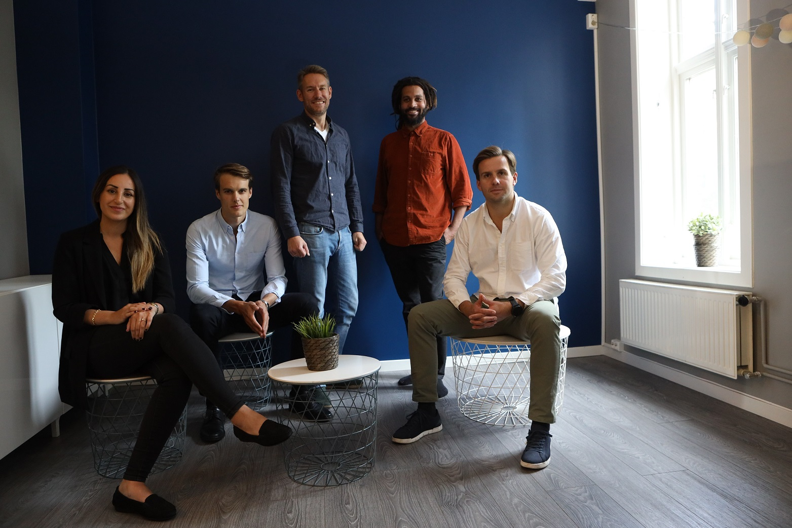

Spare penger gjennom å alltid ha de beste betingelsene.
Spare tid ved at vi automatisk, raskt og enkelt sjekker renten du
har og sammenligner med det beste tilbudet i markedet for deg.
Få trygghet rundt hva du betaler i rente, og vite at du ikke blir lurt av banken.

Teamet bak Ränteradar: f.v. Sanna Altun, Finn Olav Brækken, Sindre Noss, Stian Ihasee, Fredrik Heffermehl